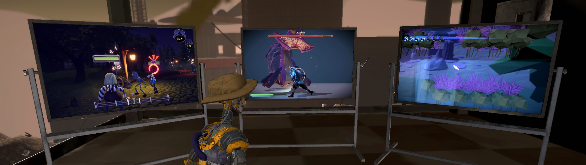

About Me
Studies
My name is Yassine Boutaouas. I have studied Animation&Game at the University of Applied Sciences in Darmstadt (Bachelor of Arts). The study program has various disciplines centered around game development. While the program teaches a little bit of everything, it allows and encourages to specialize in a few disciplines according to choice - programming in my case.
I am a programmer who has mostly worked on realtime applications and simulations - primarily games. Throughout my studies I have worked on several different game projects of varying scopes. I have developed gameplay systems, editor tools to author different processes, UI systems and AI solutions. Towards the end of my studies I have especially worked on the development of AI in games.
During my studies I have done a six month long internship at Studio Seufz. I have worked on the game Lucky Tower Ultimate as a shader programmer and VFX artist.
Outlook
As a programmer I consider myself a problem-solver. I have mostly worked with C# and C++. Regarding game engines I am most familiar with the Unity Engine. Additionally, I am highly interested in different technologies such as programming languages, patterns and paradigms in order to provide the best possible code.
If you are interested in seeing some examples of projects I have developed you can explore my projects-sub-page.